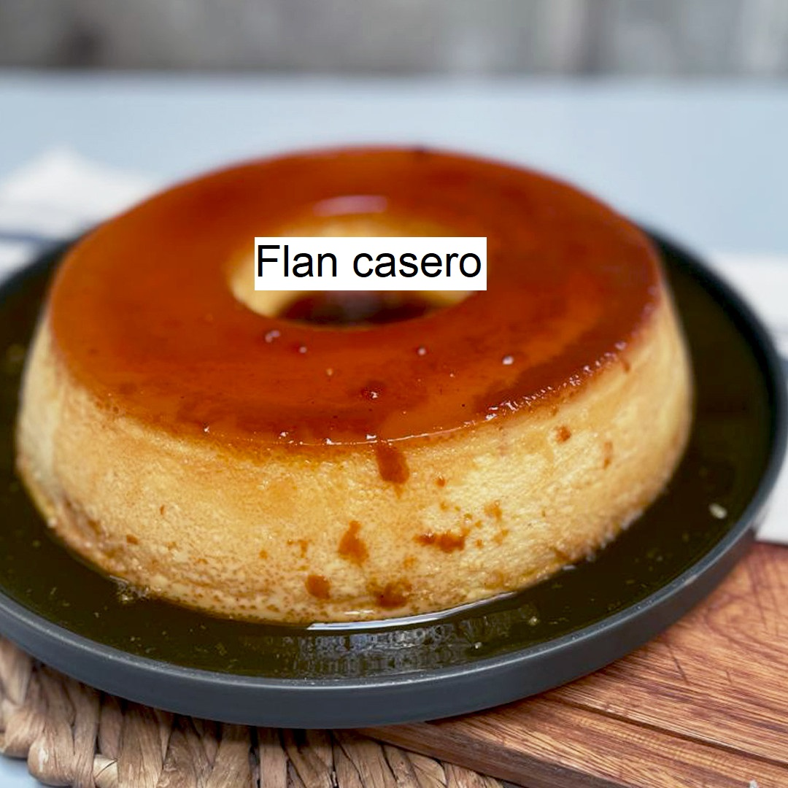

Flan casero
El flan es un postre elaborado con una preparación a base de yemas de huevo, azúcar y leche, a veces aromatizada con vainilla, que se cuece y cuaja al baño María dentro de un molde rectangular o circular con la boca más ancha que la base; tiene una consistencia blanda y temblorosa.

Ingredientes
- 5 huevos
- 500cc. de leche
- 200g de azúcar
Lo primero que vamos a hacer es cascar nuestros 5 huevos en un bol y luego, vamos a agregar 100g de azúcar. Batimos un poco hasta romper el ligue de los huevos.
Agregamos la leche. Sí, es mucha leche. No se asusten, queda muy líquido, pero se va a formar. Revolvemos con tenedor hasta que esté todo bien incorporado. Tener en cuenta que no hay que batir, no tiene que quedar espumoso, tiene que quedar bien mezclado y nada más, por eso lo hacemos a mano. Una vez que se mezclaron los ingredientes, reservamos.
Vamos con el caramelo:
Vamos a poner una sartén a fuego medio sin nada de nada, vamos a hacer un caramelo seco. Allí vamos a volcar los otros 100g de azúcar que nos quedan y vamos a ir revolviendo constantemente con una cuchara de madera. Tarda, pero van a ver que se va a ir derritiendo y el azúcar va a ir pasando de ser granulosa a líquida y su color va a comenzar a ponerse marrón. Tengan cuidado que el no se les pase a marrón muy oscuro porque eso quiere decir que se está quemando y va a agarrar un gusto amargo que va a arruinar la receta.
Tengan siempre mucho cuidado con el caramelo. Tomen todas las precauciones posibles para no quemarse y traten de alejar a los niños en el momento en que lo hagan.
Finalmente, una vez que esté el punto (este es truco de mi hermana) agregamos una cucharada de agua hirviendo y volvemos a revolver un poquito más. Esto vuelve al caramelo más chicloso.
Como cocinar el flan casero
Vamos a poner la fuente en la que vamos a hacer el flan sobre otro recipiente con paredes más bajas (una tartera por ejemplo) . Esto es porque el flan se cocina a baño maría. Colorar primero el caramelo dentro de la flanera. Lo movemos un poquito para que cubra toda la superficie del molde y ahora sí, vamos a echar nuestra mezcla de flan adentro. Dice mi hermana que si ustedes quieren un flan bien lisito, como los que se compran en el supermercado, hay que colar la mezcla para que se le salgan los grumitos. sino, la dejan como está.
Una vez que tenemos todo armado, vamos a poner agua dentro del recipiente que contiene la flanera para nuestro baño maría y también vamos a ponerle por encima una tapa de papel aluminio para que no se forme costrita. Si no les molesta, pueden no ponerlo también. Así lo vamos a llevar a horno mínimo (160º) por 40 minutos aprox.
Para saber si el flan está listo, el truco es el mismo que para cualquier torta: se mete un cuchillo y debe salir seco. Si hacen esta prueba y sale así, el flan está listo. Antes de desmoldar, hay que dejar que el flan se enfríe del todo.
Una vez que está frío, se desmolda y se come. Así de fácil.